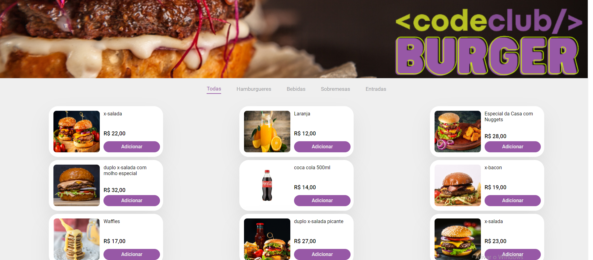
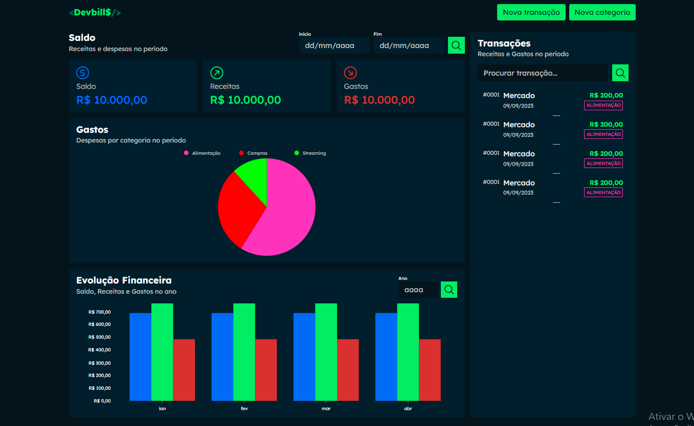
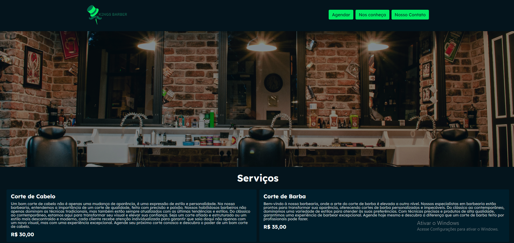
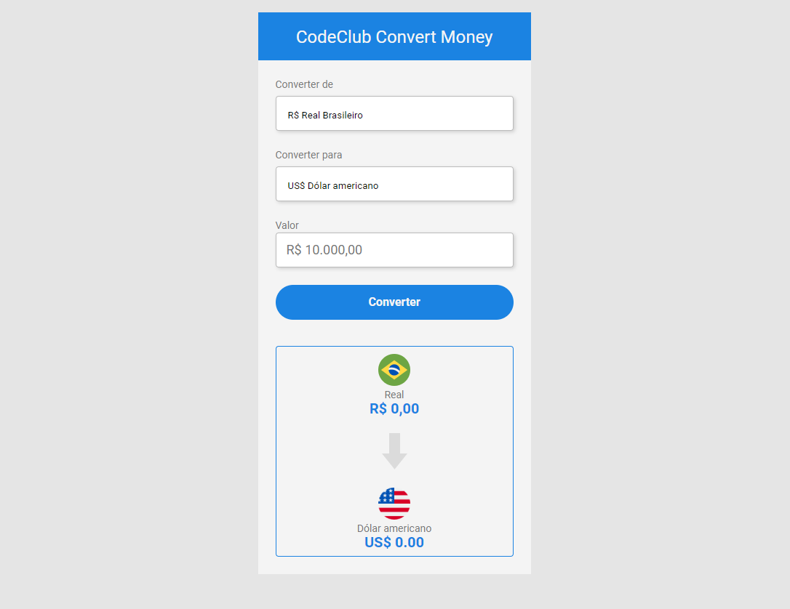
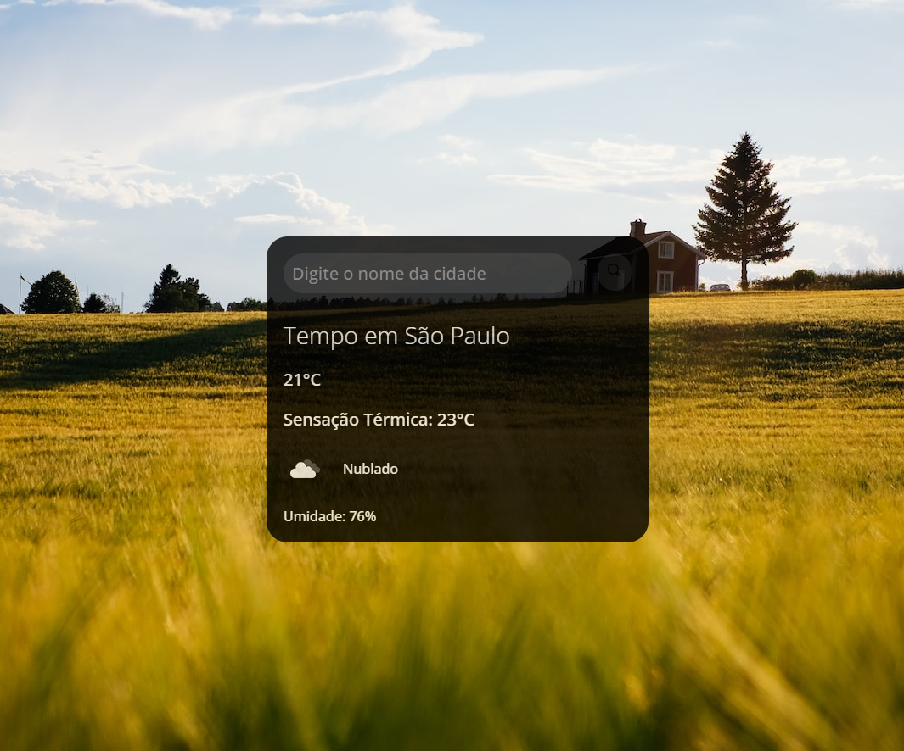

Caio César Lima Miranda - 19 anos
Olá! Sou um Desenvolvedor Full Stack e um jovem apaixonado por tecnologia e programação, e estou na busca por uma oportunidade na área de Desenvolvimento Web.
Estou cursando Ciências da Computação no Centro Universitário Farias Brito, e realizei o curso de Programadores, o DevClub, focado em Desenvolvimento Web Full Stack.
Nele, desenvolvi habilidades técnicas como HTML, CSS, JavaScript, React, Node JS, Bootstrap, Typescript, PostgreSQL, MongoDB e GitHub.
Desde novo, sempre gostei de jogar xadrez, inclusive participei de diversos torneios inclusive um nacional. Essa paixão por pensar e agir de forma estratégica me fez fortalecer minha base de estudos na programação, e assim, realizar cada vez mais projetos complexos na área de Desenvolvimento Web.
Sei o quanto ainda tenho pra crescer e contribuir pra sociedade com o desenvolvimento de sites. O CodigoCerto me chamou atenção, pois como voluntariado posso realizar mais projetos e trabalhar em equipe, o que torna a programação mais produtiva.




